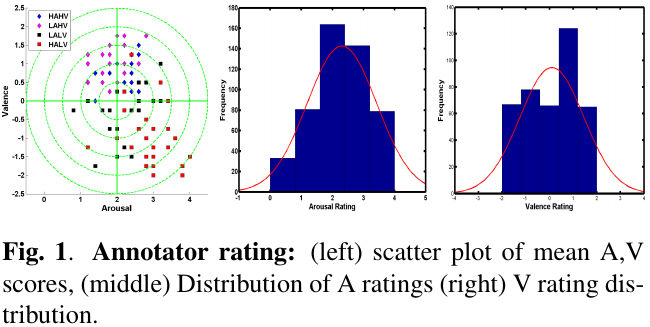
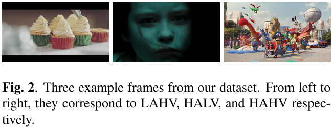

Affect Recognition in Advertisements
 
As advertisements contain strongly emotional content capable of leaving a lasting impression on the viewer, characterization of affective content in ads can facilitate online advertising, and improve end-user experience. This work involves examination of affective content in ads via human and computational perspectives. Specifically, a framework incorporating CNN features is designed to estimate affective content (emotional valence and arousal) in advertisements. We also explicitly compare content-centric and user-centric ad AR methodologies, and evaluate the impact of enhanced AR on computational advertising via a user study.
Two papers accepted at ACM International Conference on Multimedia (ACM MM) 2017 and ACM International Conference on Multimodal Interaction (ACM ICMI) 2017!